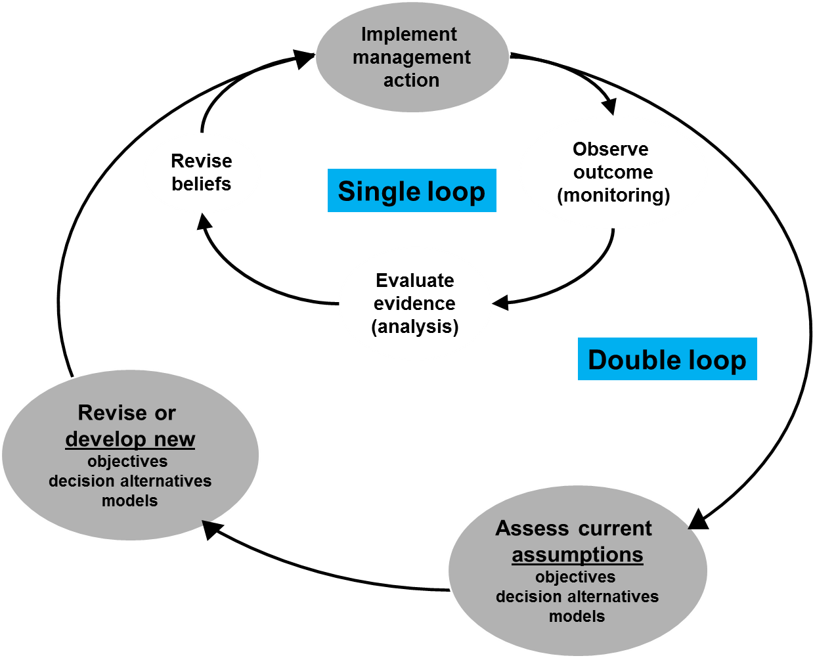
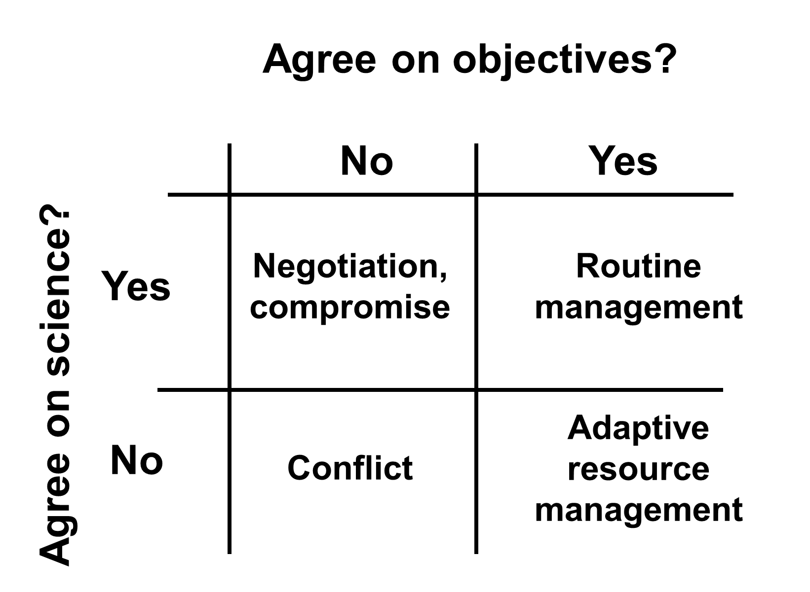
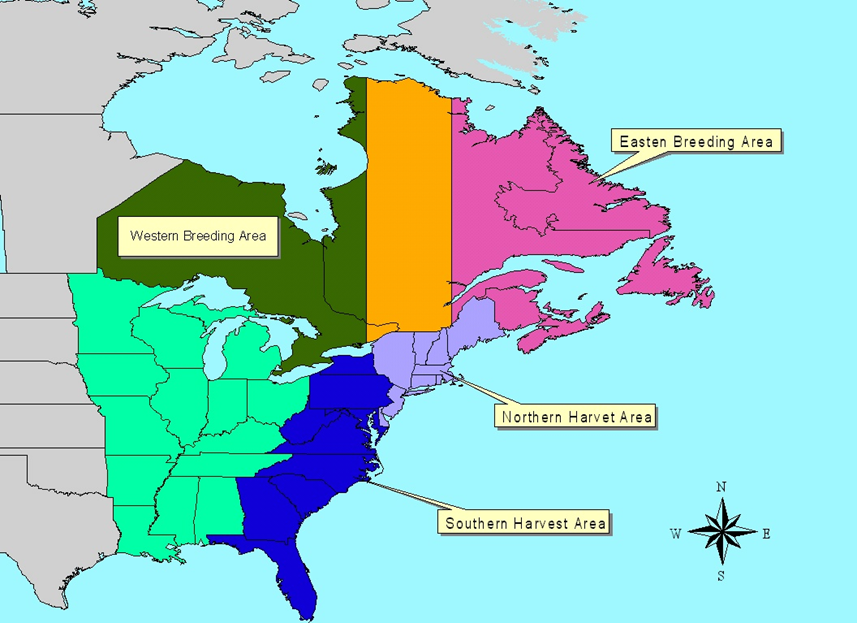
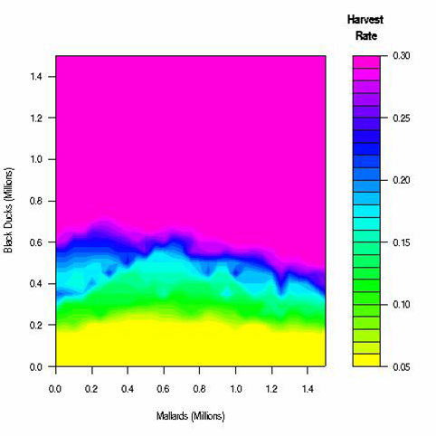
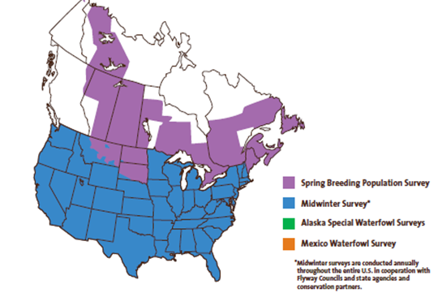
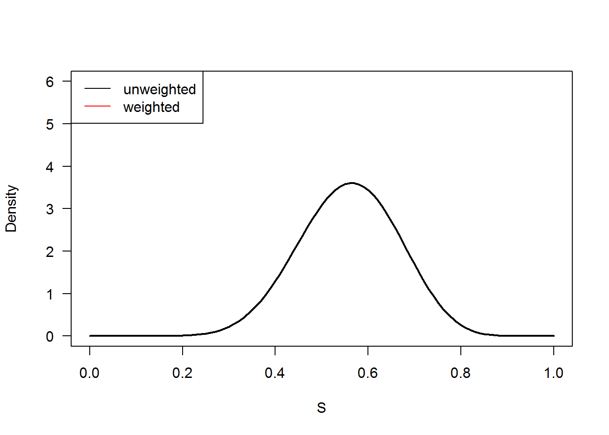

# install.packages("MDPtoolbox")
# install.packages("msm")
# install.packages("fitdistrplus")
# install.packages("Hmisc")The objectives of this class are to:
In ARM, monitoring provides:
It should be clear that monitoring and models are tightly linked in adaptive resource management in a formal process. The model weights are updated by comparing predictions to observed outcomes. For the process to work effectively and efficiently predicted and measured responses should be on the same unit scale and in the same units. For example, if models estimate population size then, monitoring should estimate the number of animals in the population rather than estimating some index of population size, such as relative abundance.
| Model prediction | Monitoring variable |
|---|---|
| Population size | Abundance |
| Species richness | Number of species |
| Species occupancy/distribution | Number or proportion of areas occupied |
| Area burned | Amount of area burned |
Decision makers also should take great care to avoid systematically biased measures, such as raw counts that are unadjusted for incomplete detection (e.g., population indices, catch-effort indices). Biased measures can provide misleading information that can lead to bad management decisions. Misleading information can have negative value.
Monitoring other decision model components should include * key drivers of outcomes * values needed to estimate expected outcome after decision * values useful for explaining unanticipated outcomes
Choosing what to monitoring as part of an adaptive resource management plan will vary from plan to plan and depends largely on the resources available to the decision maker (e.g., personnel, equipment, funds) and the sources and levels of uncertainty in the decision model. Of course, the most important components to monitor are the valued outcomes that are used to calculate the utility for example:
These must be monitored. Monitoring other components of the decision model should focus on the key drivers of the of the outcomes that are identified during sensitivity analysis like
These data are needed to plug into the model to estimate the expected outcome after the decision and also can be useful for explaining unanticipated outcomes.
The ARM process is flexible and decision makers can use loop learning
We have described ARM as a special case of structured decision making that involves dynamic decision making, multiple models representing alternative hypotheses of system dynamics, and monitoring. Monitoring is used in an iterative process that provides feedback to reduce uncertainty about the dynamics of the system being modeled. This iterative process has been defined as single loop learning.
Single loop learning in the context of ARM begins after the initial structured decision making processes is completed. That is, objectives and decision alternatives have been identified and the alternative decision models built. Learning within the single loop occurs with respect to the given (fixed) set of objectives, alternatives, and models and learning occurs relatively frequently (e.g., annually).
Through time decision makers may find that their current set of models is inadequate or that management objectives or decision alternatives are insufficient and need to be changed.
In double loop learning, the management objectives, decision alternatives, and models are reassessed and potentially revised to reflect changes in scientific knowledge and management objectives and alternatives. Learning in the outer loop occurs at a much slower rate and with slower frequency (e.g., every 10 years) compared to single loop learning (e.g., every year).
There is no general rule when to initiate the reassessment as it will vary from program to program and largely depends on the decision makers, stakeholders, and technical experts. For example, the US Fish and Wildlife Service conducts endangered species status assessments approximately every 5 years, so the reassessment of objectives, alternatives and models (i.e., the outer loop) may coincide with planned. However, decision-makers should try to minimize the frequency of the reassessments to allow for sufficient amount of time to accumulate information.

ARM is fairly flexible and can be modified to fit the decision situation.
There are two basic forms of adaptive resource management:
The ARM process is the same for both forms. Alternative models are used to identify the optimal decision and monitoring data are used to improve the understanding of system dynamics.
Passive ARM
In passive ARM, decisions are chosen as if the current uncertainty about the system dynamics will not change. That is, the decision is chosen based long term gain in management objectives (utility) assuming the model weights will not change. Information gained through monitoring for passive ARM is incorporated, but not in a planned way.
Active ARM Active ARM takes into account how reducing uncertainty can affect the long term gain. For example, a particular decision at a point in time may resolve key uncertainties quicker or more efficiently than the other decisions and resolution of the uncertainty will result in better decision making and greater long term gain in management objectives. Active ARM generally does not involve experimentation or probing of the system. Probing can, in fact, reduce the long term gain. Probing is only valued when uncertainty is very high and management loss is expected to be high if the uncertainty is not resolved. Taking into account learning to improve management is termed dual control.
| Passive ARM | Active ARM |
|---|---|
| Relatively simple | Computationally more complex |
| Choose decisions as if current uncertainty will not change | Potential information returned by each decision is given value when evaluating each decision |
| Information gained through monitoring is incorporated, but not in a planned way | “Probing” is valued when: 1) uncertainty is very high 2) management loss is expected,to be high if uncertainty is,unresolved |
Policies under the 2 approaches can differ because passive does not anticipate learning.
Adaptive resource management can be useful for resolving potential conflicts among stakeholders, provided the disagreement is about science. Especially if * stakeholders agree on objectives but * have different ideas about how the system works.
The differing ideas can be incorporated into the decision model as alternative models. Monitoring then can be used to resolve the uncertainty.
However, not all apparent disagreements on science are truly about the science or “your model versus my model.” Sometimes, scientific disagreement is used to mask disagreements over stakeholder objectives.

In these instances, ARM is not the appropriate tool, but the ARM process can be used to reveal these potential problems.
There are some common misconceptions about ARM; chief among these is:
For more background see * Conroy and Peterson Chapter 9 * Anderson 1975 * Conroy, Nichols, and Hines
Maximum sustainable harvest

Alternative models were used to represent hypotheses of reproduction and survival processes influencing population dynamics.
A combination of statistical and calibrated predictive models were used to predict outcomes of varying harvest rates.
A process called stochastic dynamic programming was used to identify the optimal state dependent harvest policy illustrated below that maximizes harvest over a 100 year period.

Example from Conroy and Peterson 2013 Passive ARM SDP example in Appendix E
## Stochastic dynamic programming requires this library
library(MDPtoolbox)## Warning: package 'MDPtoolbox' was built under R version 3.1.2## Loading required package: Matrix## Warning: package 'Matrix' was built under R version 3.1.3##
## Attaching package: 'Matrix'## The following objects are masked from 'package:base':
##
## crossprod, tcrossprod## Loading required package: linprog## Warning: package 'linprog' was built under R version 3.1.2## Loading required package: lpSolve## Warning: package 'lpSolve' was built under R version 3.1.3decisions<- c(0.1,0.2,0.3)
abundance<- c(5,10,15)
# With a decision specific transition matrices matrix
P <- array(0, c(3,3,3))#### weight of model 1
mod1.wt<- 0.5## decision 1 harvest = 0.1
Model1.1 <- matrix(c(0.2, 0.5, 0.3, 0.2,.3,0.5,0.1,0.3,0.6), 3, 3, byrow=TRUE)
Model2.1 <- matrix(c(0.3, 0.5, 0.2, 0.3,0.3,0.4,0.2,0.3,0.5), 3, 3, byrow=TRUE)
## model averaged transition matrix
P[,,1] <- Model1.1*mod1.wt + Model2.1*(1-mod1.wt)## decision 1 harvest = 0.2
Model1.2<- matrix(c(0.5,0.3,0.2,0.2,0.5,0.3,0.2,0.4,0.4), 3, 3, byrow=TRUE)
Model2.2<- matrix(c(0.7,0.3,0.0,0.4,0.5,0.1,0.5,0.4,0.1), 3, 3, byrow=TRUE)
P[,,2] <- Model1.2*mod1.wt + Model2.2*(1-mod1.wt)## decision 1 harvest = 0.3
Model1.3<- matrix(c(0.7,0.3,0.0,0.6,0.3,0.1,0.3,0.5,0.2), 3, 3, byrow=TRUE)
Model2.3<- matrix(c(0.9,0.1,0.0,0.7,0.3,0.0,0.4,0.6,0.0), 3, 3, byrow=TRUE)
P[,,3] <- Model1.3*mod1.wt + Model2.3*(1-mod1.wt)Now if we make a reward matrix, the numbers harvested, we can use that to find the optimal policy.
##Reward matrix
R <- matrix(c(0.5,1.0,1.5,
1,2,3,
1.5,3.0,4.5),
nrow=3,
ncol=3,
byrow=TRUE)Without going into the details, although they can be found in Appendix E of Conroy and Peterson, the transitions and reward matrix can be iterated over to identify the policy that maximizes the reward over the long term. This allows us to move beyond the maximizing the utility in the next year to addressing sustainability. SDP is done in R using the mdp_policy_iteration() function from the mdptoolbox library. Let’s see how it works below.
## heres the better way it automatically iterates and stops when the policy is stable
out<-mdp_policy_iteration(P=P, R=R, discount=.99999)The function returns the index of the optimal decision, so we can use that index to build a policy table.
policyTable<- data.frame(Abundance= abundance,
HarvestRate=decisions[out$policy])Now that was a case where the transition matrices were already put together, but how do we make them? Let’s put this in context. This example is from Anderson’s 1975 duck model. In that model he proposed an additive and compensatory effect of harvest mortality on adult and juvenile survival. Let’s see how that works.
Here we will evaluate the optimal policy for duck abundances varying from 1 to 15 million assuming there are 2 million ponds on the landscape.
The decision here is the harvest rate which 5 levels are evaluated varying from 0 to 0.4.
The code below sets this up.
N_t<- c(1:15)
H_t<- seq(0,0.4,by = 0.1)
combo<-expand.grid(
N_t=N_t,
P_t=2,
H_t=H_t,
rep=1:5000)Now we start to produce the population dynamics. The equation below predicts the number of young production to be added to the fall population as a function of the number of ducs and ponds along with uncertainty.
# young production to be added to fall population (equation 2 (Anderson 1975))
combo$Y_t = 1/((1/(12.48*combo$P_t^0.851))+
(0.519/combo$N_t))
# add uncertainty
library(msm) ## Warning: package 'msm' was built under R version 3.1.3set.seed(8483)#for reproducability
combo$Y_t <- rtnorm(length(combo$Y_t),
combo$Y_t,
combo$Y_t*0.3,
lower = 1)Now we can calulate the fall population as a survival rate times the numbers of adults plus the number of young.
# Fall population at time t (equation 5 (Anderson 1975))
combo$F_t = (0.92*combo$N_t) + combo$Y_t Now we can set up how many ducks were harvested given the harvest rate and the number of ducks. We will need to keep track of this number becuase it will be how we value different harvest rates.
# Harvest at time t (need to keep track of this)
combo$harvest<-ifelse(combo$F_t < combo$H_t*combo$F_t,
combo$F_t,
combo$H_t*combo$F_t)Now we can see what the population size will be in the next year given 2 hypotheses of how harvest mortality interacts with natural mortality, in an additive or compensatory way.
The code below predicts survival assuming harvest mortality is additive and we can calculate what the population will be in the next year.
# AMH: ADDITIVE MORTALITY
combo$survival_adult_amh<- (1-0.27*exp(2.08*combo$H_t))
combo$survival_young_amh<- (1-0.40*exp(0.67*combo$H_t))
# Pop size after spring migration
# AMH: ADDITIVE MORTALITY
combo$N.t1.amh<- combo$N_t*combo$survival_adult_amh +
combo$Y_t*combo$survival_young_amhWe can do the same thing for the compensatory model.
# CMH: COMPENSATORY MORTALITY
combo$survival_adult_cmh<- ifelse(combo$H_t<0.25,
0.57,
(0.57-1.2*(combo$H_t-0.25)))
combo$survival_young_cmh<- ifelse(combo$H_t<0.25,
0.5,
(0.5-1*(combo$H_t-0.25)))
# Pop size after spring migration
# CMH: COMPENSATORY MORTALITY
combo$N.t1.cmh<- combo$N_t*combo$survival_adult_cmh +
combo$Y_t*combo$survival_young_cmhOne of the quirks we have to deal with here is that new states can arise and that messes things up. Specifically, if we have 1 million ducks out there the future population might be less than 1 million ducks. The way we treat this is to simply make that outcome 1 million. We can also have the case when the population in the next year may be more than 15 millions. We simply round that outcome down to 15. And we also need to turn future abundance into a whole number, which the floor() function nicely accomplishes for us. We will see why this is important here in a sec.
# keep new states from arising
combo$N.t1.amh <- ifelse(combo$N.t1.amh>15,
15,
combo$N.t1.amh)
combo$N.t1.amh <- floor(ifelse(combo$N.t1.amh<1,
1,
combo$N.t1.amh))
combo$N.t1.cmh <- ifelse(combo$N.t1.cmh>15,
15,
combo$N.t1.cmh)
combo$N.t1.cmh <- floor(ifelse(combo$N.t1.cmh<1,
1,
combo$N.t1.cmh))Now that that nuisance is taken care of we can calculate the transition probabilities as a conditional probability matrix. This will be a 15 by 15 matrix if we do it right and it will have 4 matrices in the array. The table function will tally up the frequencies for us for each abundance state and harvest level.
## create a table of transition frequencies that will be turned into
## state transition probabilities one for each decision alternative
TM_amh<- table(combo$N_t,combo$N.t1.amh,combo$H_t)
TM_cmh<- table(combo$N_t,combo$N.t1.cmh,combo$H_t)We can use the prop.table() but we will use a special argument margin=c(1,3) which calculates the conditional probability for each row by each matrix.
# These are now transition matrices one for each
# harvest decision alternative
TM_amh<- prop.table(TM_amh,
margin=c(1,3))
TM_cmh<- prop.table(TM_cmh,
margin=c(1,3))We now need to figure out the value, utility, or reward to maximize. In this case it is harvest and we simply need to figure out the probability for each harvest level given the harvest rate and intial population size. The tapply() function works well for this.
## calculate the average (expected) return for each population
## state / decision alternative combination
harvest<-tapply(X=combo$harvest,
INDEX=list(combo$N_t,combo$H_t),
FUN=mean)And just like before we can combine the transition matrices into a single matrix by multiplying the values by the prior and summing the elements but we need to do it by each harvest level.
Assuming complete uncertainty we can assign a prior probability of 0.5 to the additive and 0.5 to the compensatory hypotheses.
## Weight and add model specific population size estimates
prior_amh<- 0.5
prior_cmh<- (1-prior_amh)
TM<- TM_amh*prior_amh + prior_cmh*TM_cmhNow we have transition matrices representing population dynamics given the varying harvest rates. And we have matrix of rewards. Now we can use SDP to identify the optimal harvest policy for each abundance state.
### now find optimal state dependent harvest
out<- mdp_policy_iteration(P=TM,
R=harvest,
discount=.999,
policy0=rep(4,15),
max_iter=100)We can use the output to construct a policy table. This gives us the optimal harvest policy for each abundance state.
policyTable<- data.frame(Abundance= N_t,
HarvestRate1=H_t[out$policy])
policyTable## Abundance HarvestRate1
## 1 1 0.0
## 2 2 0.0
## 3 3 0.1
## 4 4 0.2
## 5 5 0.2
## 6 6 0.2
## 7 7 0.2
## 8 8 0.2
## 9 9 0.2
## 10 10 0.2
## 11 11 0.3
## 12 12 0.3
## 13 13 0.3
## 14 14 0.3
## 15 15 0.3Now, suppose we did some monitoring and was able to update our prior probabilities for each hypotheses, we can simply rerun the SDP and see the changes in optimal harvest policy. In this case we there is more evidence for compensation then harvest rates should be higher after we learn this. Let’s see if that happens.
All we need to do is reweight the transition matrices to reflect this new knowledge.
## Weight and add model specific population size estimates
prior_amh<- 0.25
prior_cmh<- (1-prior_amh)
TM<- TM_amh*prior_amh + prior_cmh*TM_cmhAnd use that updated transition matrix in the policy iteration.
### now find optimal state dependent harvest
out<- mdp_policy_iteration(P=TM,
R=harvest,
discount=.999,
policy0=rep(4,15),
max_iter=100)Now let’s add those new policies to the policy table and see if they adapted to the new information.
policyTable$HarvestRate2<- H_t[out$policy]
policyTable## Abundance HarvestRate1 HarvestRate2
## 1 1 0.0 0.0
## 2 2 0.0 0.0
## 3 3 0.1 0.2
## 4 4 0.2 0.2
## 5 5 0.2 0.2
## 6 6 0.2 0.2
## 7 7 0.2 0.2
## 8 8 0.2 0.2
## 9 9 0.2 0.3
## 10 10 0.2 0.3
## 11 11 0.3 0.3
## 12 12 0.3 0.3
## 13 13 0.3 0.3
## 14 14 0.3 0.3
## 15 15 0.3 0.3
Current data and models sufficient to build a realistic AHM for black ducks. Objectives of black duck international harvest management can be addressed in an AHM context Monitoring programs sufficient for adaptation but rates of learning may be slow
Adaptive resource management is a special case of structured decision making that is focused on
ARM requires:
Monitoring plays a crucial role is ARM. It provides:
Expert information can be used to parameterize decision models. If you have not completed those lessons, please review them before taking this lesson. The use of expert judgment involves asking one or more experts that are familiar with the phenomenon being modeled (e.g., the effects of disease on wildlife populations) to parameterize the relationship between two or more model components. Eliciting useful expert information can be a difficult task and several approaches have been developed to help analysts elicit information. There are two approaches that are categorized by the means of elicitation: direct elicitation and indirect elicitation, and the type of measure provided by the experts: quantitative or qualitative. We will learn how to quantify expert judgment conduct the analysis using quantitative direct elicitation and indirect elicitation methods. Specifically, we will cover
Probability elicitation is a direct, quantitative method that requires experts that are familiar and comfortable with statistical concepts, such as probability. Typical type of question for probability elicitation is:
Given that the maximum summer water temperature is 33C or greater, what is the probability that an amphibian species will survive?
Suppose we asked 6 experts this question and received the following, values 0.5, 0.6, 0.45, 0.65, 0.45, 0.7. We could combine the values across experts by treating these values as data and calculating a mean. Uncertainty among experts can be estimated by calculating the variance.
Surv<- c(0.5, 0.6, 0.45, 0.65, 0.45, 0.7)
s.mean<-mean(Surv)
s.var<- var(Surv)Uncertainty in a probability can be modeled using a beta distribution. Thus, we could use the method of moments to estimate the parameters of the beta (a, b) from the mean and the standard deviation.
### beta method of moments
beta.mom<-function(mean,v)
{
x<-mean
a<-x*(x*(1-x)/v-1)
b<-(1-x)*(x*(1-x)/v-1)
c(a,b)
}
out<-beta.mom(s.mean,s.var)
out## [1] 11.501531 9.098226We could also use maximum likelihood to estimate the 2 beta distribution parameters. We might as well use the method of moments estimates for to start the optimization!
library(fitdistrplus) ## Warning: package 'fitdistrplus' was built under R version 3.1.3fit<- fitdist(Surv,"beta",
start=c(shape1=out[1],
shape2=out[2]))
fit## Fitting of the distribution ' beta ' by maximum likelihood
## Parameters:
## estimate Std. Error
## shape1 14.25455 8.170572
## shape2 11.26283 6.425610Often one or more experts have greater experience than others and we have greater faith in the values they provide. Weights are represented using positive numbers with larger numbers representing greater weight. The absolute values of the weights do not matter. Rather it is the relative differences among the weights that are used to weight the values provided by the experts. For example, the weights 1,1,2,1,2,4 are equal to 0.091,0.091,0.182,0.091,0.182,0.364 because the relative proportions are equal. To demonstrate we can use the wtd.mean() and wtd.var() function to estimate the mean and the variance incorporating the expert weights.
library(Hmisc)## Warning: package 'Hmisc' was built under R version 3.1.3## Loading required package: lattice## Warning: package 'lattice' was built under R version 3.1.3## Loading required package: survival## Warning: package 'survival' was built under R version 3.1.3## Loading required package: Formula## Warning: package 'Formula' was built under R version 3.1.3## Loading required package: ggplot2## Warning: package 'ggplot2' was built under R version 3.1.3## Stackoverflow is a great place to get help:
## http://stackoverflow.com/tags/ggplot2.##
## Attaching package: 'Hmisc'## The following objects are masked from 'package:base':
##
## format.pval, round.POSIXt, trunc.POSIXt, units# weights as whole numbers
wt1<-c(1,1,2,1,2,4)
# weights as proportions
wt2<- wt1/sum(wt1)
#means
wtd.mean(Surv,wt1) ## [1] 0.5772727wtd.mean(Surv,wt2) ## [1] 0.5772727#variance
wtd.var(Surv,wt1) ## [1] 0.01368182wtd.var(Surv,wt2) ## [1] Infout_w<-beta.mom(mean=wtd.mean(Surv,wt1),
v=wtd.var(Surv,wt2))
out_w## [1] -0.5772727 -0.4227273Here we calculate weighted and unweighted means and variances of these probability values provided by experts. Using those values we then calculate the parameters of a beta distribution using either method of movements or maximum likelihood.
We can visualize the effect by plotting the probability density for the beta distribution estimated from the unweighted and weighted mean and variance. Lets take a look.
S<- seq(0,1,0.01)
unweighted<-dbeta(S,
shape1=out[1],
shape2=out[2])
plot(S,unweighted,
col="black",
type='l',
ylab="Density",
lwd=2,
ylim=c(0,6),
las=1)
weighted<-dbeta(S,
shape1=out_w[1],
shape2= out_w[2])## Warning in dbeta(S, shape1 = out_w[1], shape2 = out_w[2]): NaNs producedpoints(S,weighted,
col="red",
type='l',
lwd=2)
legend("topleft",
legend=c("unweighted", "weighted"),
lty=1,
col=c("black","red"))
Weighting the experts’ estimates moved the location to be closer to 0.6 and increased the uncertainty (spread) around the location.
Things to consider here are that the use of expert information and weighted can be good, but it can also be bad… It may be possible to ‘game’ the system if an expert or experts are given an undue amount of weight. So it might be prudent to run analysis/simulations both ways to assess whether the effect of weighting has a dramatic effect on the decision.
In some instances, you will need to ask experts to fill out conditional probability tables that are used in influence diagrams and combine values across experts. For example, suppose that we asked 3 experts to fill out the following tables for estimating species status:
| Expert | Snag density | Forest canopy | Absent | Rare | Abundant |
|---|---|---|---|---|---|
| expert 1 | Many | Open | 0.36 | 0.36 | 0.29 |
| Many | Closed | 0.15 | 0.35 | 0.5 | |
| Few | Open | 0.67 | 0.25 | 0.08 | |
| Few | Closed | 0.44 | 0.38 | 0.19 | |
| expert2 | Many | Open | 0.37 | 0.45 | 0.18 |
| Many | Closed | 0.17 | 0.41 | 0.41 | |
| Few | Open | 0.69 | 0.28 | 0.03 | |
| Few | Closed | 0.51 | 0.47 | 0.01 | |
| expert3 | Many | Open | 0.36 | 0.38 | 0.26 |
| Many | Closed | 0.17 | 0.43 | 0.41 | |
| Few | Open | 0.66 | 0.3 | 0.03 | |
| Few | Closed | 0.56 | 0.42 | 0.03 |
As before, we can calculate the means and weighted means of the probabilities in corresponding cells. However, be careful that the same cells are selected as below or that you read each expert table as a matrix.
# Absent
Many.Open<-c(0.36,0.37,0.36)
Many.Closed<-c(0.15,0.17,0.17)
Few.Open<-c(0.67,0.69,0.66)
Few.Closed<-c(0.44,0.51,0.56)
#means
mean(Many.Open) ## [1] 0.3633333mean(Many.Closed) ## [1] 0.1633333mean(Few.Open) ## [1] 0.6733333mean(Few.Closed) ## [1] 0.5033333Let’s try weighting like we did before.
#expert weights
wt<-c(5,10,100)
#weighted means
wtd.mean(Many.Open,wt) ## [1] 0.3608696wtd.mean(Many.Closed,wt) ## [1] 0.1691304wtd.mean(Few.Open,wt) ## [1] 0.6630435wtd.mean(Few.Closed,wt) ## [1] 0.5504348